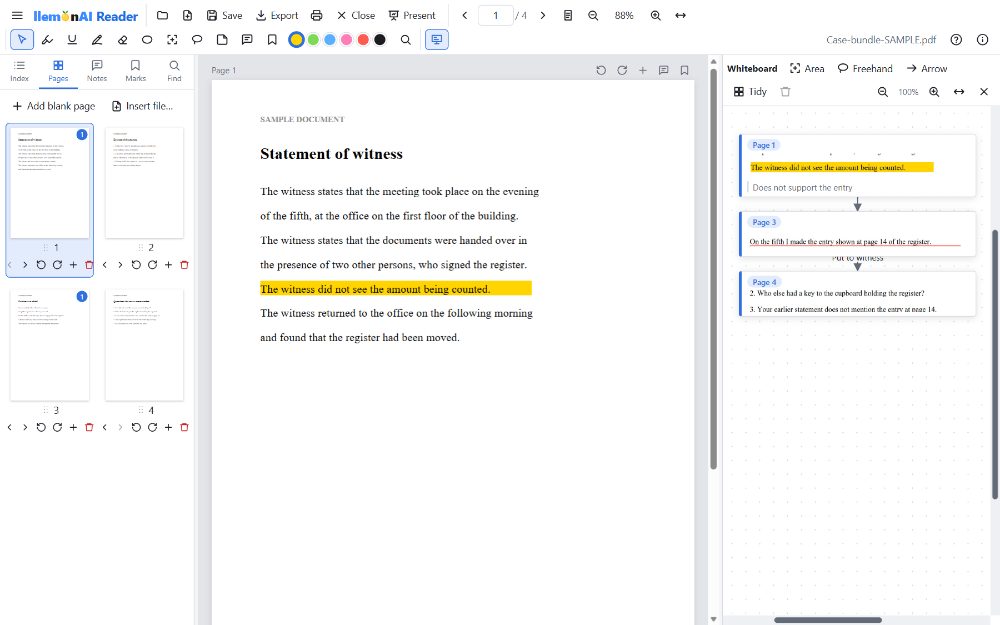
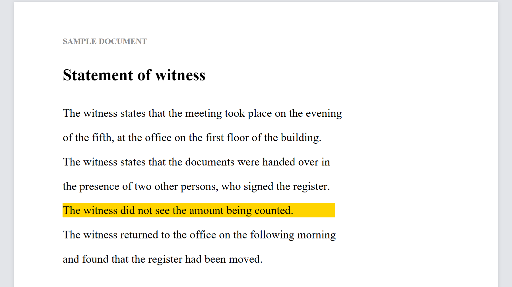
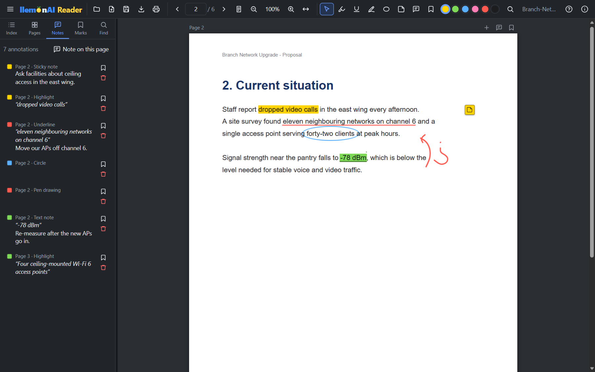
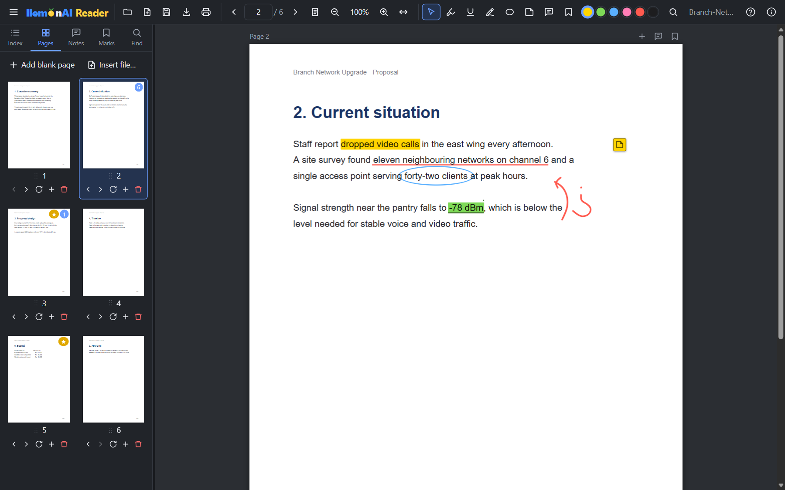
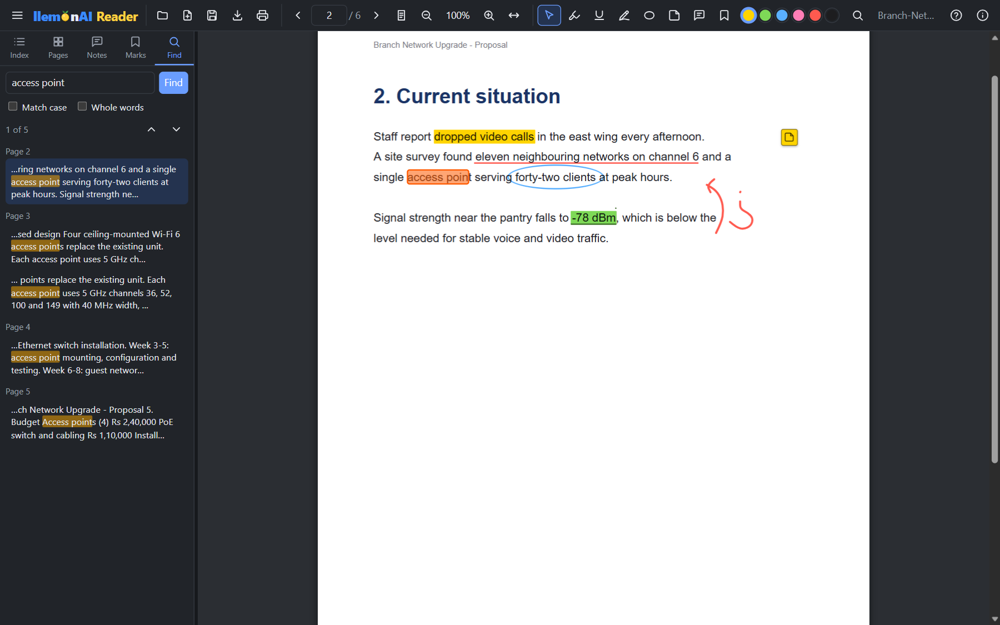
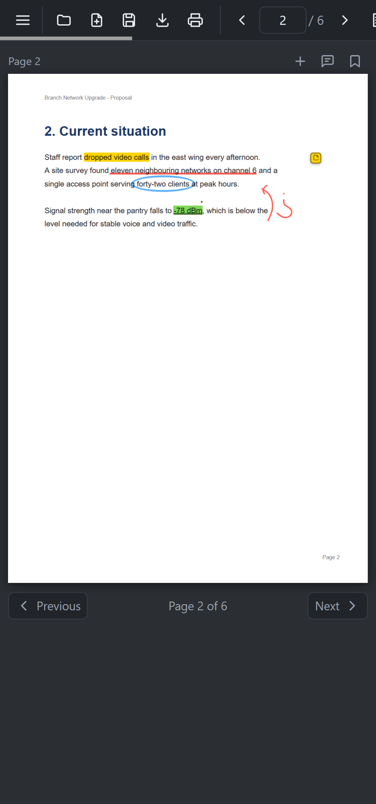
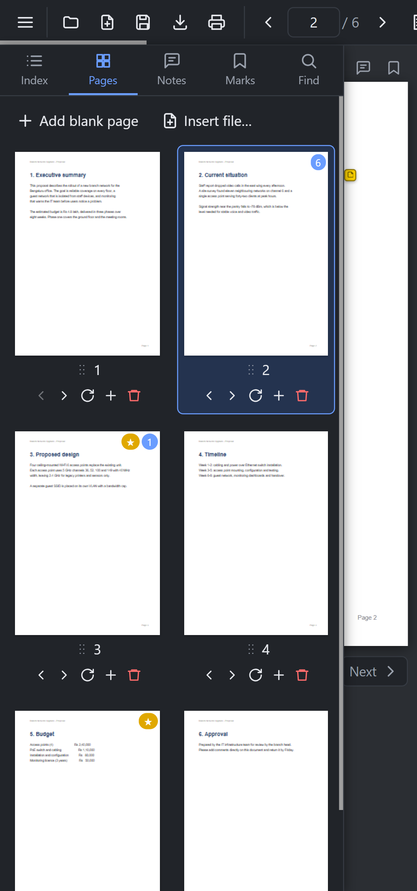

A free PDF reader, annotator and presentation tool for advocates, teachers, students and trainers. Combine your documents into one PDF, mark them up and collect key passages on a whiteboard. When you present on a projector or video call, your audience sees only the PDF page, not your notes, desktop or other windows.
The same simple tools, for anyone who works from documents.
Keep trial court records, pleadings, witness statements, evidence, orders, judgments, appeals, memos, hand notings and arguments in one PDF, with a bookmark for each document. During arguments, cross-examination or a virtual hearing, your notes stay on your screen while the audience sees only the page. How advocates use it
Teach on Zoom, Google Meet or Microsoft Teams without showing your desktop, other windows or answer keys. Share only the audience window, then highlight and write on the page with a pen as you explain. Students see each stroke as you draw it.
Combine lecture notes, textbook extracts and question papers into one PDF for the classroom projector. Move through pages, zoom in on a diagram and annotate live, with your thumbnails and teaching notes visible only to you.
Merge notes and past papers, highlight key points and find any sentence in seconds. Copy text or any part of a page to the whiteboard, connect related ideas with arrows, and click a box to return to the page it came from. Useful for revision for board exams, entrance tests and competitive exams.
Run training sessions and client presentations from one PDF on a projector, Teams or Zoom. Your email, chat windows and desktop stay off the shared screen, and Export produces one final copy with every note included.
Read books, reports, contracts and research papers one page at a time or in continuous scrolling. Mark them up, keep notes and bookmarks, and save a normal PDF that opens in other PDF viewers.
Stop juggling folders and bundles. Keep trial court records, pleadings, witness statements, evidence, orders, judgments, appeals, memos, hand notings and arguments together in one PDF, in the order you want to argue them. Free, with no signup.
Combine trial court records, pleadings, witness statements including Section 161 statements (Section 180 BNSS), evidence, orders, judgments, appeals, memos, bare acts and written arguments into one PDF. PDF and Word files both work. Each file gets its own bookmark, and you can reorder pages or insert a document at any position as the matter grows.
Write directly on a page with a mouse, stylus or finger, just as you would in the margin of a paper file. Highlight or underline text, circle a passage, and attach a note to a sentence or a whole page. The Notes panel lists every annotation in one place.
Jump straight to any document with its bookmark, a page thumbnail or the page number, and search a word or whole sentence across typed documents. Scanned records can be read and annotated, but can only be searched if the PDF already contains text.
Pull a line from a deposition, a paragraph of an order and a section of the act onto the whiteboard, keeping any annotations on them, and connect them with arrows. Each box shows its page number and takes you back to that page with one click.
Have the record, your questions and your notes ready on your own screen. Where the court or forum allows a screen, or in a virtual hearing, the projector or shared window shows only the page you choose, and your notes and other documents stay with you.
Client files are opened, annotated and saved on your own device. Nothing is uploaded. Your notes and whiteboard are saved inside the PDF, so keep a clean copy of any document you need to send to someone else.
Click Present and a separate audience window shows only the PDF page, following what you do on your screen. Your toolbar, thumbnails, whiteboard, notes and desktop stay with you. Available on Windows.
Connect the projector, press Windows+P and choose Extend, then click Present. With Duplicate, the audience sees your whole screen, so use Extend.
Click Present, then in Zoom, Microsoft Teams or Google Meet share only the window named llemonAI Reader - Audience, not your entire screen. Viewers won't see your other windows or desktop background.
Page changes, zoom, scrolling, highlights and pen strokes appear for your audience as you make them. Click a whiteboard box and they see that page, with the source lit up.
Mark it up, keep track of it, and hand back one clean file.
Copy selected text, a rectangle or any freehand shape from any page, along with its annotations. Each box shows its page number and opens that page when clicked, and arrows connect related boxes. It is saved inside the PDF.
The document's own table of contents, page thumbnails, your notes, bookmarks and search results live in a side panel that scrolls on its own — the page you're reading never moves it.
Select text to highlight or underline it in six colours, or draw a circle around anything that matters. Every mark can carry a note.
Write, sign or sketch directly on the page with a mouse, finger or stylus. Thin, medium or thick pen; Ctrl+Z undoes the last stroke.
Pin a sticky note anywhere, attach a note to a sentence or a whole page, and bookmark pages or individual comments to jump back to them later.
Find a single word or a whole sentence across the document, even when it breaks over lines — with match-case and whole-word options and a results list in context.
Drag thumbnails to reorder, rotate or delete pages, insert blank pages, or insert another PDF or Word file at any position. Notes move with their pages.
Append PDFs and Word (.docx) documents to the one you're reading — or combine several files into a new one. Each file gets a bookmark, and Word text stays searchable.
Save keeps annotations editable and visible in any PDF viewer. Export burns them in and adds a Notes & comments appendix — one master file to share or archive.
A real review session on Windows — highlights, an underline with a comment, a circle, a sticky note and pen marks, with every annotation listed in the side panel.





...and on Android — the same features, with touch: pinch to zoom, draw with a finger, and the side panel as a slide-out drawer.


Windows, Mac or Android — pick the build that matches your device. Not sure which Windows build? Almost every PC made since 2010 is 64-bit — use the 64-bit build unless you know otherwise.
llemonAI Reader 2.0.1, 7 Nov 2026. New: the Mac app (Apple Silicon and Intel) with Presentation mode; hide pages so reading, presenting, Print and Export skip them; one clockwise rotate button per thumbnail; and Check for updates with one-click install in About, plus a list of what's new in each version. Also includes Presentation mode on Windows, the whiteboard with page links and arrows, reading with a docked index and page panel, highlights, underlines, circles, pen, eraser, sticky notes, page notes and bookmarks, word and sentence search, page management, PDF and Word merging, editable save, master PDF export and printing.
The Mac app isn't notarized by Apple (that needs a paid Apple developer account), so macOS blocks it the first time you open it. You only have to allow it once:
After that it opens normally with a double-click, and updates installed from About → Check for updates open without asking again. The warning doesn't mean anything was found in the app; you can confirm your download is genuine with its SHA256 checksum.
On macOS 12–14 you can also right-click (or Control-click) the app in Applications, choose Open, then Open again.
Or, in Terminal, remove the “downloaded from the internet” mark (one time): xattr -dr com.apple.quarantine "/Applications/llemonAI Reader.app"
Verify your download hasn't been tampered with or corrupted: after downloading, run certutil -hashfile llemonAI-Reader-2.0.1-win-x64.exe SHA256 (PowerShell/Command Prompt), or on a Mac shasum -a 256 llemonAI-Reader-2.0.1-macos.dmg (Terminal), and compare the result to the SHA256 value shown above for the file you downloaded.
All builds are digitally signed (self-signed certificates, SHA256; the Mac app has an ad-hoc signature and isn't notarized by Apple, so macOS blocks its first launch until you click Open Anyway — see Opening on a Mac). Windows SmartScreen may still show an "Unknown Publisher" warning, and Android may warn about installing from an unknown source, on first run — that's expected since neither is signed by a publicly trusted CA or listed on the Play Store yet. The signature and the SHA256 checksum above both let you confirm each file matches exactly what we published.
Installing the Android APK: Android will block it by default as an "unknown source." Open the downloaded file, tap through the "Install anyway" / "allow this source" prompt, then Install. This is normal for any app installed outside the Play Store.
How llemonAI Reader handles your files.
| Topic | Details |
|---|---|
| Your files stay on your device | Documents are opened, annotated and saved locally. Nothing is uploaded. |
| Annotations | Saved as standard PDF annotations, so they show in other PDF viewers too — and stay editable when you reopen the file in llemonAI Reader. |
| Save or Export | Use Save for any file you may want to change. Export makes a final copy: highlights, drawings and notes are burned into the pages, with a Notes & comments list at the end, and can't be erased from that copy. |
| Whiteboard | Save keeps the whiteboard inside the PDF. Export and Print do not include it. |
| Presentation mode | Windows and macOS. On a projector, use Extend (Windows+P) or an extended display on a Mac, not Duplicate or mirroring. On a video call, share only the audience window, not your entire screen. |
| Hidden pages | The eye button on a thumbnail hides a page: it stays in the file, but reading, search, the projector, Print and Export skip it. Other PDF viewers still show it. |
| Updates | About → Check for updates installs a newer version after checking its SHA256 checksum. Nothing is checked unless you click it. |
| Word files | .docx files are converted to searchable PDF pages (headings, paragraphs, lists, tables and images). Old Word 97–2003 .doc files need to be re-saved as .docx first. |
| Encrypted PDFs | Password-protected PDFs can be opened, read, searched and printed, but not changed. |
| Shortcuts | Ctrl+O open · Ctrl+S save · Ctrl+W close · Ctrl+P print · Ctrl+F search · ← → pages · F1 help |